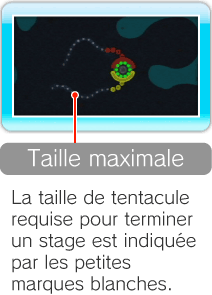
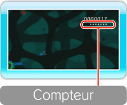
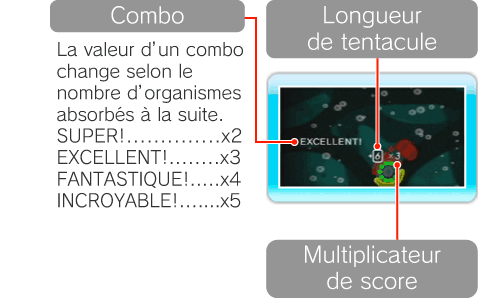
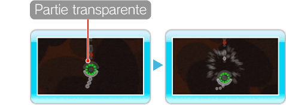

-

Mode stages
Dans le mode stages, l’objectif est de faire atteindre la taille requise à tous vos tentacules pour terminer les stages. Les tentacules
ayant atteint leur taille maximale arrêtent de grandir et ne se brisent pas s’ils touchent des organismes d’une autre couleur. Cependant, vous perdez toujours une sphère d’énergie.
Note: aucun score n’est indiqué dans le mode stages.
-

Vagues et compteur
Les organismes apparaissent dans des groupes appelés vagues. Un compteur vous indique, à l’aide de marques blanches, le nombre d’organismes à assimiler avant
la vague suivante. Le compteur perd une marque blanche à chaque organisme absorbé. La vague suivante arrive une fois le compteur vide.
-
Score
Les points que vous recevez dépendent de la taille des tentacules avec lesquels vous absorbez les organismes. De plus, vous pouvez réaliser
des combos en absorbant des organismes à la suite et sans subir de dommages. Les combos multiplient entre 2 et 5 fois les points que vous recevez.
Par exemple à l’écran suivant:
6 (longueur de tentacule) x 3 (valeur du combo) = 18 points.

-
Partie transparente
Dans le mode serpent, votre organisme comporte une membrane transparente pouvant détruire les autres organismes
entrant à son contact, sans que vous ne subissiez le moindre dommage. Cependant, cette membrane transparente ne vous permet pas d’absorber
d’autres organismes ou d’allonger votre tentacule.
